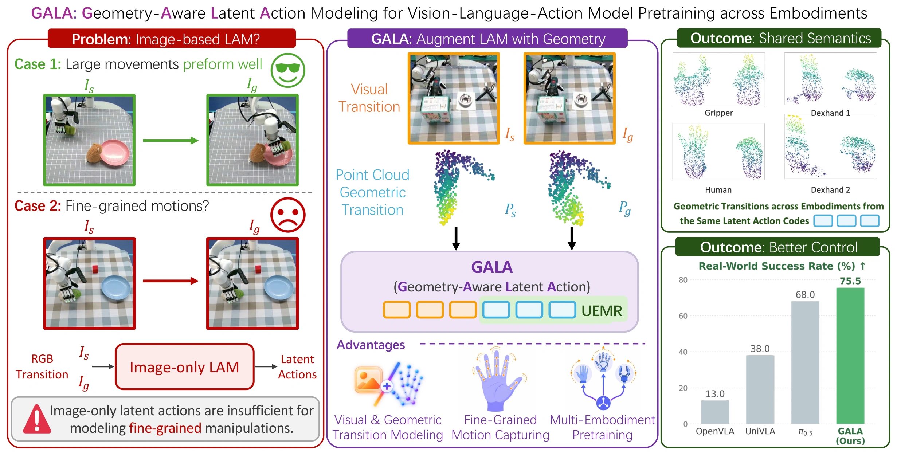
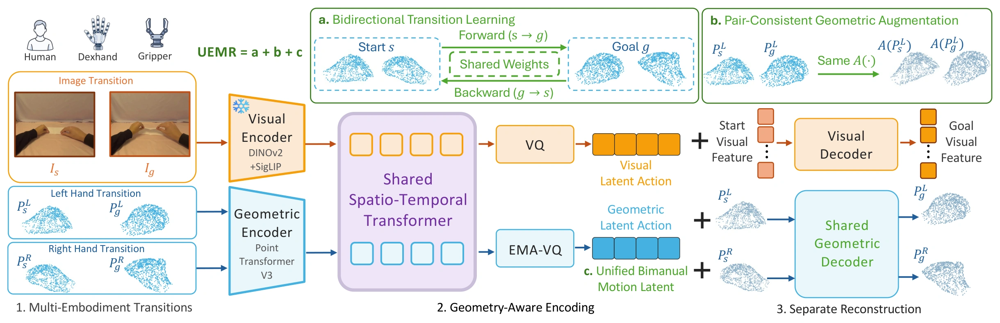
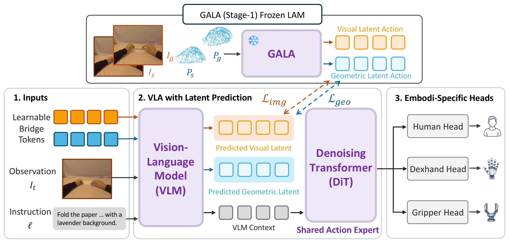

GALAGeometry-Aware Latent Action Modeling
for Vision-Language-Action Model Pretraining
across Embodiments
Anonymous submission · Under review

Abstract
Learning large-scale vision-language-action (VLA) models from multi-embodiment datasets remains challenging due to heterogeneous action spaces across end effectors. Although latent action models (LAMs) can learn embodiment-agnostic action representations from diverse video data, existing image-based LAMs often fail to capture fine-grained end-effector articulation, particularly finger-level geometric changes in human and dexterous robot hands. To address this limitation, we propose GALA, a Geometry-Aware Latent-Action modeling framework that augments image-based latent actions with 3D end-effector geometric motion. However, naively incorporating point clouds yields fine-grained action representations with limited shared semantics, hindering cross-embodiment pretraining. To address this issue, we introduce the Unified End-effector Motion Representation (UEMR), which preserves fine-grained motion information while improving the cross-embodiment generalizability of latent actions. Building upon UEMR, GALA combines visual latent actions that capture scene-level dynamics with geometric latent actions that capture shared fine-grained end-effector articulation, providing effective supervision for VLA pretraining from multi-embodiment data, including action-free ego-centric human videos. Experiments on fine-grained motion probing, cross-embodiment retrieval, and downstream VLA evaluation demonstrate GALA’s effectiveness in modeling generalizable fine-grained motions across embodiments, achieving 68.3% RoboCasa-GR1 success rate and 75.5% real-world success rate.
Overview Video
Method
Visual dynamics and fine-grained geometry, learned together across human hands, dexterous robot hands, and parallel-jaw grippers.
Stage 1 · Geometry-Aware Latent Action Learning

Stage 2 · Geometry-Aware VLA Co-Training

Experimental Results
Fine-Grained Motion Probing
A frozen representation and a lightweight probe predict end-effector translation, wrist rotation, and finger articulation.
| Method | Position (cm) ↓ | Rotation (°) ↓ | Finger (°) ↓ |
|---|---|---|---|
| METIS | 6.162 | 8.520 | 14.328 |
| Native Kinematics | 5.879 | 8.098 | 7.768 |
| OPFA | 6.102 | 8.260 | 7.707 |
| GALA w/o PC | 6.790 | 8.567 | 15.113 |
| GALA (Ours) | 5.359 | 7.898 | 7.585 |
Held-out XHand test set; averaged over three fixed random seeds. Lower is better.
Cross-Embodiment Motion Retrieval
Retrieving grasp, hold, and release transitions across different embodiments.
Human–Robot Track
| Method | R@1 ↑ | P@5 ↑ | mAP ↑ |
|---|---|---|---|
| METIS | 33.26 | 33.29 | 37.21 |
| GALA w/o PC | 33.37 | 33.37 | 36.38 |
| GALA w/o UEMR | 38.69 | 40.31 | 48.15 |
| GALA (Ours) | 45.67 | 44.57 | 49.49 |
Robot-Only Track
| Method | R@1 ↑ | P@5 ↑ | mAP ↑ |
|---|---|---|---|
| METIS | 33.30 | 33.30 | 36.10 |
| Native Kinematics | 39.31 | 35.46 | 41.94 |
| OPFA | 41.18 | 36.83 | 43.03 |
| GALA w/o PC | 33.38 | 33.38 | 36.41 |
| GALA w/o UEMR | 33.83 | 38.54 | 43.11 |
| GALA (Ours) | 46.91 | 41.74 | 46.95 |
All metrics are percentages; higher is better. Macro-averaged across motion classes and directed embodiment pairs.
multi-embodiment success
multi-embodiment co-training
average success
RoboCasa-GR1 · GR-1-Only Training
| Latent action model | Success rate (%) ↑ |
|---|---|
| UniVLA | 48.0 |
| METIS | 43.8 |
| Native Kinematics | 51.8 |
| OPFA | 53.5 |
| GALA w/o PC | 50.9 |
| GALA w/o UEMR | 54.4 |
| GALA (Ours) | 55.7 |
Same VLA architecture, training data, and optimization settings; only the latent action model changes.
RoboCasa-GR1 · Multi-Embodiment Co-Training
Average success across 24 dexterous tabletop manipulation tasks.
Success rate on a 0–100% scale. Publicly reported baselines are reproduced from the paper.
| Method | Success rate (%) ↑ | Gain vs. GR-1 only |
|---|---|---|
| FLARE | 55.0 | — |
| DiT4DiT | 56.7 | — |
| JoyAI-RA | 63.2 | — |
| UniT | 66.8 | — |
| UniVLA | 53.6 | +5.6 |
| GALA w/o UEMR | 58.6 | +4.2 |
| GALA (Ours) | 68.3 | +12.6 |
RoboCasa-GR1 Demonstrations
One successful rollout for each of the 24 tabletop manipulation tasks.
Real-World Manipulation
Success rates across four evaluated tasks, with 50 trials per task.
| Method | Pick ↑ | Push ↑ | Press ↑ | Flip ↑ | Average ↑ |
|---|---|---|---|---|---|
| OpenVLA | 0 | 24 | 18 | 10 | 13.0 |
| UniVLA | 38 | 62 | 32 | 20 | 38.0 |
| OpenVLA-OFT | 52 | 72 | 54 | 42 | 55.0 |
| π₀ | 56 | 72 | 56 | 34 | 54.5 |
| π₀.₅ | 72 | 80 | 68 | 52 | 68.0 |
| HARP-VLA | 72 | 82 | 74 | 58 | 71.5 |
| GALA w/o UEMR | 74 | 78 | 72 | 50 | 68.5 |
| GALA (Ours) | 80 | 82 | 78 | 62 | 75.5 |
Success rates (%). Pouring demonstrations are supplementary and are not included in this benchmark.
Real-World Demonstrations
Dexterous manipulation across objects and actions.
Each demonstration includes third-person and wrist-camera views.